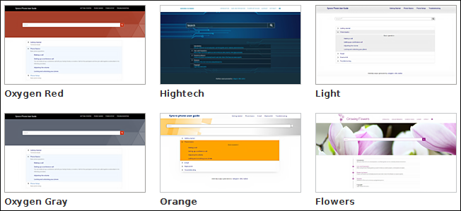

Publishing Templates Gallery
Oxygen XML Author comes bundled with a variety of built-in templates. You can use one of them to publish your documentation or as a starting point for a new publishing template.
Built-in Templates
There are two categories of templates, Tiles and Tree. You can see the
built-in templates in the Templates tab when editing a WebHelp
Responsive transformation scenario in Oxygen XML Editor/Author. Each one also
includes an  Online preview
icon in the bottom-right corner that opens a webpage in your default browser that provides a
sample of how the main page will look when that particular template is used to generate the
output.
Online preview
icon in the bottom-right corner that opens a webpage in your default browser that provides a
sample of how the main page will look when that particular template is used to generate the
output.
- Tiles Templates
-
The main page in the WebHelp output presents a tile for each main topic (chapter) of the documentation.

- Tree Templates
-
The main page in the WebHelp output presents a tree-like table of contents.

Built-in Templates Location
All built-in templates are stored in the following directory: DITA-OT-DIR/plugins/com.oxygenxml.webhelp.responsive/templates.
Custom Templates
You can use a built-in template as a starting point for creating your own custom template. You can store all of your custom templates in a particular directory. Then, go to and add your directory to the list, and all the templates stored in that directory will be displayed in the preview pane in the transformation scenario's Template tab along with all the built-in templates.
Sharing Publishing Template
To share a publishing template with others, following these steps:
- Copy your template in a new folder.
- Go to and add that new folder to the list.
- Switch the option as the bottom of that preferences page to Project Options.
- Share your project file (.xpr).